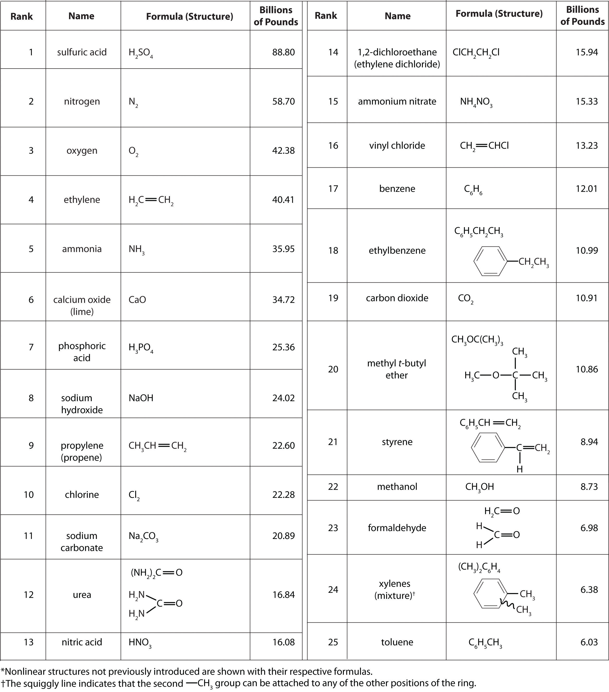
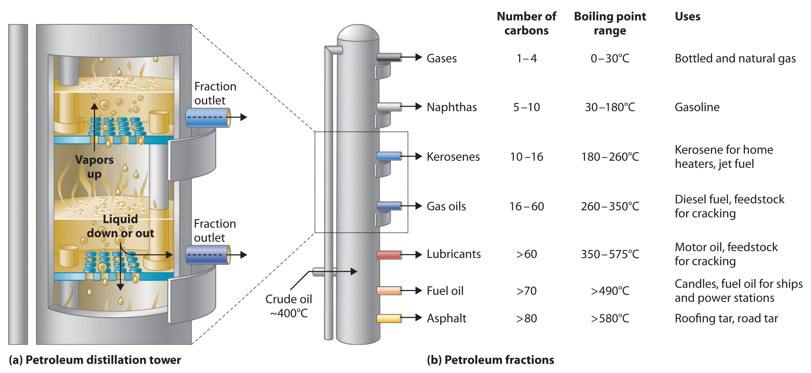
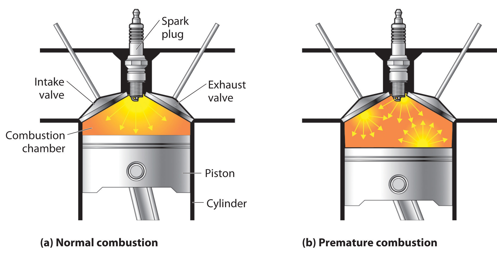
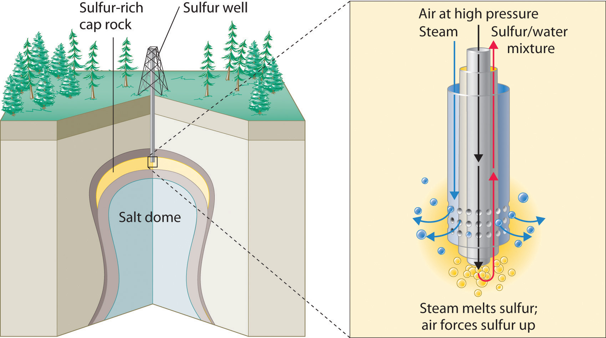

It isn’t easy to comprehend the scale on which the chemical industry must operate to supply the huge amounts of chemicals required in modern industrial societies. Figure 2.22 "Top 25 Chemicals Produced in the United States in 2002*" lists the names and formulas of the chemical industry’s “top 25” for 2002—the 25 chemicals produced in the largest quantity in the United States that year—along with the amounts produced, in billions of pounds. To put these numbers in perspective, consider that the 88.80 billion pounds of sulfuric acid produced in the United States in 2002 has a volume of 21.90 million cubic meters (2.19 × 107 m3), enough to fill the Pentagon, probably the largest office building in the world, about 22 times.
Figure 2.22 Top 25 Chemicals Produced in the United States in 2002*
According to Figure 2.22 "Top 25 Chemicals Produced in the United States in 2002*", 11 of the top 15 compounds produced in the United States are inorganic, and the total mass of inorganic chemicals produced is almost twice the mass of organic chemicals. Yet the diversity of organic compounds used in industry is such that over half of the top 25 compounds (13 out of 25) are organic.
Why are such huge quantities of chemical compounds produced annually? They are used both directly as components of compounds and materials that we encounter on an almost daily basis and indirectly in the production of those compounds and materials. The single largest use of industrial chemicals is in the production of foods: 7 of the top 15 chemicals are either fertilizers (ammonia, urea, and ammonium nitrate) or used primarily in the production of fertilizers (sulfuric acid, nitric acid, nitrogen, and phosphoric acid). Many of the organic chemicals on the list are used primarily as ingredients in the plastics and related materials that are so prevalent in contemporary society. Ethylene and propylene, for example, are used to produce polyethylene and polypropylene, which are made into plastic milk bottles, sandwich bags, indoor-outdoor carpets, and other common items. Vinyl chloride, in the form of polyvinylchloride, is used in everything from pipes to floor tiles to trash bags. Though not listed in Figure 2.22 "Top 25 Chemicals Produced in the United States in 2002*", butadiene and carbon black are used in the manufacture of synthetic rubber for tires, and phenol and formaldehyde are ingredients in plywood, fiberglass, and many hard plastic items.
We do not have the space in this text to consider the applications of all these compounds in any detail, but we will return to many of them after we have developed the concepts necessary to understand their underlying chemistry. Instead, we conclude this chapter with a brief discussion of petroleum refining as it relates to gasoline and octane ratings and a look at the production and use of the topmost industrial chemical, sulfuric acid.
The petroleum that is pumped out of the ground at locations around the world is a complex mixture of several thousand organic compounds, including straight-chain alkanes, cycloalkanes, alkenes, and aromatic hydrocarbons with four to several hundred carbon atoms. The identities and relative abundances of the components vary depending on the source. So Texas crude oil is somewhat different from Saudi Arabian crude oil. In fact, the analysis of petroleum from different deposits can produce a “fingerprint” of each, which is useful in tracking down the sources of spilled crude oil. For example, Texas crude oil is “sweet,” meaning that it contains a small amount of sulfur-containing molecules, whereas Saudi Arabian crude oil is “sour,” meaning that it contains a relatively large amount of sulfur-containing molecules.
Petroleum is converted to useful products such as gasoline in three steps: distillation, cracking, and reforming. Recall from Chapter 1 "Introduction to Chemistry" that distillation separates compounds on the basis of their relative volatility, which is usually inversely proportional to their boiling points. Part (a) in Figure 2.23 "The Distillation of Petroleum" shows a cutaway drawing of a column used in the petroleum industry for separating the components of crude oil. The petroleum is heated to approximately 400°C (750°F), at which temperature it has become a mixture of liquid and vapor. This mixture, called the feedstock, is introduced into the refining tower. The most volatile components (those with the lowest boiling points) condense at the top of the column where it is cooler, while the less volatile components condense nearer the bottom. Some materials are so nonvolatile that they collect at the bottom without evaporating at all. Thus the composition of the liquid condensing at each level is different. These different fractions, each of which usually consists of a mixture of compounds with similar numbers of carbon atoms, are drawn off separately. Part (b) in Figure 2.23 "The Distillation of Petroleum" shows the typical fractions collected at refineries, the number of carbon atoms they contain, their boiling points, and their ultimate uses. These products range from gases used in natural and bottled gas to liquids used in fuels and lubricants to gummy solids used as tar on roads and roofs.
Figure 2.23 The Distillation of Petroleum
(a) This is a diagram of a distillation column used for separating petroleum fractions. (b) Petroleum fractions condense at different temperatures, depending on the number of carbon atoms in the molecules, and are drawn off from the column. The most volatile components (those with the lowest boiling points) condense at the top of the column, and the least volatile (those with the highest boiling points) condense at the bottom.
The economics of petroleum refining are complex. For example, the market demand for kerosene and lubricants is much lower than the demand for gasoline, yet all three fractions are obtained from the distillation column in comparable amounts. Furthermore, most gasolines and jet fuels are blends with very carefully controlled compositions that cannot vary as their original feedstocks did. To make petroleum refining more profitable, the less volatile, lower-value fractions must be converted to more volatile, higher-value mixtures that have carefully controlled formulas. The first process used to accomplish this transformation is crackingA process in petroleum refining in which the larger and heavier hydrocarbons in kerosene and higher-boiling-point fractions are heated to high temperatures, causing the carbon–carbon bonds to break (“crack”), thus producing a more volatile mixture., in which the larger and heavier hydrocarbons in the kerosene and higher-boiling-point fractions are heated to temperatures as high as 900°C. High-temperature reactions cause the carbon–carbon bonds to break, which converts the compounds to lighter molecules similar to those in the gasoline fraction. Thus in cracking, a straight-chain alkane with a number of carbon atoms corresponding to the kerosene fraction is converted to a mixture of hydrocarbons with a number of carbon atoms corresponding to the lighter gasoline fraction. The second process used to increase the amount of valuable products is called reformingThe second process used in petroleum refining, which is the chemical conversion of straight-chain alkanes to either branched-chain alkanes or mixtures of aromatic hydrocarbons.; it is the chemical conversion of straight-chain alkanes to either branched-chain alkanes or mixtures of aromatic hydrocarbons. Using metals such as platinum brings about the necessary chemical reactions. The mixtures of products obtained from cracking and reforming are separated by fractional distillation.
The quality of a fuel is indicated by its octane ratingA measure of a fuel’s ability to burn in a combustion engine without knocking or pinging (indications of premature combustion). The higher the octane rating, the higher quality the fuel., which is a measure of its ability to burn in a combustion engine without knocking or pinging. Knocking and pinging signal premature combustion (Figure 2.24 "The Burning of Gasoline in an Internal Combustion Engine"), which can be caused either by an engine malfunction or by a fuel that burns too fast. In either case, the gasoline-air mixture detonates at the wrong point in the engine cycle, which reduces the power output and can damage valves, pistons, bearings, and other engine components. The various gasoline formulations are designed to provide the mix of hydrocarbons least likely to cause knocking or pinging in a given type of engine performing at a particular level.
Figure 2.24 The Burning of Gasoline in an Internal Combustion Engine
(a) Normally, fuel is ignited by the spark plug, and combustion spreads uniformly outward. (b) Gasoline with an octane rating that is too low for the engine can ignite prematurely, resulting in uneven burning that causes knocking and pinging.
The octane scale was established in 1927 using a standard test engine and two pure compounds: n-heptane and isooctane (2,2,4-trimethylpentane). n-Heptane, which causes a great deal of knocking on combustion, was assigned an octane rating of 0, whereas isooctane, a very smooth-burning fuel, was assigned an octane rating of 100. Chemists assign octane ratings to different blends of gasoline by burning a sample of each in a test engine and comparing the observed knocking with the amount of knocking caused by specific mixtures of n-heptane and isooctane. For example, the octane rating of a blend of 89% isooctane and 11% n-heptane is simply the average of the octane ratings of the components weighted by the relative amounts of each in the blend. Converting percentages to decimals, we obtain the octane rating of the mixture:
0.89(100) + 0.11(0) = 89A gasoline that performs at the same level as a blend of 89% isooctane and 11% n-heptane is assigned an octane rating of 89; this represents an intermediate grade of gasoline. Regular gasoline typically has an octane rating of 87; premium has a rating of 93 or higher.
As shown in Figure 2.25 "The Octane Ratings of Some Hydrocarbons and Common Additives", many compounds that are now available have octane ratings greater than 100, which means they are better fuels than pure isooctane. In addition, antiknock agents, also called octane enhancers, have been developed. One of the most widely used for many years was tetraethyllead [(C2H5)4Pb], which at approximately 3 g/gal gives a 10–15-point increase in octane rating. Since 1975, however, lead compounds have been phased out as gasoline additives because they are highly toxic. Other enhancers, such as methyl t-butyl ether (MTBE), have been developed to take their place. They combine a high octane rating with minimal corrosion to engine and fuel system parts. Unfortunately, when gasoline containing MTBE leaks from underground storage tanks, the result has been contamination of the groundwater in some locations, resulting in limitations or outright bans on the use of MTBE in certain areas. As a result, the use of alternative octane enhancers such as ethanol, which can be obtained from renewable resources such as corn, sugar cane, and, eventually, corn stalks and grasses, is increasing.
Figure 2.25 The Octane Ratings of Some Hydrocarbons and Common Additives

You have a crude (i.e., unprocessed or straight-run) petroleum distillate consisting of 10% n-heptane, 10% n-hexane, and 80% n-pentane by mass, with an octane rating of 52. What percentage of MTBE by mass would you need to increase the octane rating of the distillate to that of regular-grade gasoline (a rating of 87), assuming that the octane rating is directly proportional to the amounts of the compounds present? Use the information presented in Figure 2.25 "The Octane Ratings of Some Hydrocarbons and Common Additives".
Given: composition of petroleum distillate, initial octane rating, and final octane rating
Asked for: percentage of MTBE by mass in final mixture
Strategy:
A Define the unknown as the percentage of MTBE in the final mixture. Then subtract this unknown from 100% to obtain the percentage of petroleum distillate.
B Multiply the percentage of MTBE and the percentage of petroleum distillate by their respective octane ratings; add these values to obtain the overall octane rating of the new mixture.
C Solve for the unknown to obtain the percentage of MTBE needed.
Solution:
A The question asks what percentage of MTBE will give an overall octane rating of 87 when mixed with the straight-run fraction. From Figure 2.25 "The Octane Ratings of Some Hydrocarbons and Common Additives", the octane rating of MTBE is 116. Let x be the percentage of MTBE, and let 100 − x be the percentage of petroleum distillate.
B Multiplying the percentage of each component by its respective octane rating and setting the sum equal to the desired octane rating of the mixture (87) times 100 gives
C Solving the equation gives x = 55%. Thus the final mixture must contain 55% MTBE by mass.
To obtain a composition of 55% MTBE by mass, you would have to add more than an equal mass of MTBE (actually 0.55/0.45, or 1.2 times) to the straight-run fraction. This is 1.2 tons of MTBE per ton of straight-run gasoline, which would be prohibitively expensive. Thus there are sound economic reasons for reforming the kerosene fractions to produce toluene and other aromatic compounds, which have high octane ratings and are much cheaper than MTBE.
Exercise
As shown in Figure 2.25 "The Octane Ratings of Some Hydrocarbons and Common Additives", toluene is one of the fuels suitable for use in automobile engines. How much toluene would have to be added to a blend of the petroleum fraction in this example containing 15% MTBE by mass to increase the octane rating to that of premium gasoline (93)?
Answer: The final blend is 56% toluene by mass, which requires a ratio of 56/44, or 1.3 tons of toluene per ton of blend.
Sulfuric acid is one of the oldest chemical compounds known. It was probably first prepared by alchemists who burned sulfate salts such as FeSO4·7H2O, called green vitriol from its color and glassy appearance (from the Latin vitrum, meaning “glass”). Because pure sulfuric acid was found to be useful for dyeing textiles, enterprising individuals looked for ways to improve its production. By the mid-18th century, sulfuric acid was being produced in multiton quantities by the lead-chamber process, which was invented by John Roebuck in 1746. In this process, sulfur was burned in a large room lined with lead, and the resulting fumes were absorbed in water.
The production of sulfuric acid today is likely to start with elemental sulfur obtained through an ingenious technique called the Frasch process, which takes advantage of the low melting point of elemental sulfur (115.2°C). Large deposits of elemental sulfur are found in porous limestone rocks in the same geological formations that often contain petroleum. In the Frasch process, water at high temperature (160°C) and high pressure is pumped underground to melt the sulfur, and compressed air is used to force the liquid sulfur-water mixture to the surface (Figure 2.26 "Extraction of Elemental Sulfur from Underground Deposits"). The material that emerges from the ground is more than 99% pure sulfur. After it solidifies, it is pulverized and shipped in railroad cars to the plants that produce sulfuric acid, as shown here.
Transporting sulfur. A train carries elemental sulfur through the White Canyon of the Thompson River in British Columbia, Canada.
Figure 2.26 Extraction of Elemental Sulfur from Underground Deposits
In the Frasch process for extracting sulfur, very hot water at high pressure is injected into the sulfur-containing rock layer to melt the sulfur. The resulting mixture of liquid sulfur and hot water is forced up to the surface by compressed air.
An increasing number of sulfuric acid manufacturers have begun to use sulfur dioxide (SO2) as a starting material instead of elemental sulfur. Sulfur dioxide is recovered from the burning of oil and gas, which contain small amounts of sulfur compounds. When not recovered, SO2 is released into the atmosphere, where it is converted to an environmentally hazardous form that leads to acid rain (Chapter 4 "Reactions in Aqueous Solution").
If sulfur is the starting material, the first step in the production of sulfuric acid is the combustion of sulfur with oxygen to produce SO2. Next, SO2 is converted to SO3 by the contact process, in which SO2 and O2 react in the presence of V2O5 to achieve about 97% conversion to SO3. The SO3 can then be treated with a small amount of water to produce sulfuric acid. Usually, however, the SO3 is absorbed in concentrated sulfuric acid to produce oleum, a more potent form called fuming sulfuric acid. Because of its high SO3 content (approximately 99% by mass), oleum is cheaper to ship than concentrated sulfuric acid. At the point of use, the oleum is diluted with water to give concentrated sulfuric acid (very carefully because dilution generates enormous amounts of heat). Because SO2 is a pollutant, the small amounts of unconverted SO2 are recovered and recycled to minimize the amount released into the air.
Two-thirds of the sulfuric acid produced in the United States is used to make fertilizers, most of which contain nitrogen, phosphorus, and potassium (in a form called potash). In earlier days, phosphate-containing rocks were simply ground up and spread on fields as fertilizer, but the extreme insolubility of many salts that contain the phosphate ion (PO43−) limits the availability of phosphorus from these sources. Sulfuric acid serves as a source of protons (H+ ions) that react with phosphate minerals to produce more soluble salts containing HPO42− or H2PO4− as the anion, which are much more readily taken up by plants. In this context, sulfuric acid is used in two principal ways: (1) the phosphate rocks are treated with concentrated sulfuric acid to produce “superphosphate,” a mixture of 32% CaHPO4 and Ca(H2PO4)2·H2O, 50% CaSO4·2H2O, approximately 3% absorbed phosphoric acid, and other nutrients; and (2) sulfuric acid is used to produce phosphoric acid (H3PO4), which can then be used to convert phosphate rocks to “triple superphosphate,” which is largely Ca(H2PO4)2·H2O.
Sulfuric acid is also used to produce potash, one of the other major ingredients in fertilizers. The name potash originally referred to potassium carbonate (obtained by boiling wood ashes with water in iron pots), but today it also refers to compounds such as potassium hydroxide (KOH) and potassium oxide (K2O). The usual source of potassium in fertilizers is actually potassium sulfate (K2SO4), which is produced by several routes, including the reaction of concentrated sulfuric acid with solid potassium chloride (KCl), which is obtained as the pure salt from mineral deposits.
Many chemical compounds are prepared industrially in huge quantities and used to produce foods, fuels, plastics, and other such materials. Petroleum refining takes a complex mixture of naturally occurring hydrocarbons as a feedstock and, through a series of steps involving distillation, cracking, and reforming, converts them to mixtures of simpler organic compounds with desirable properties. A major use of petroleum is in the production of motor fuels such as gasoline. The performance of such fuels in engines is described by their octane rating, which depends on the identity of the compounds present and their relative abundance in the blend.
Sulfuric acid is the compound produced in the largest quantity in the industrial world. Much of the sulfur used in the production of sulfuric acid is obtained via the Frasch process, in which very hot water forces liquid sulfur out of the ground in nearly pure form. Sulfuric acid is produced by the reaction of sulfur dioxide with oxygen in the presence of vanadium(V) oxide (the contact process), followed by absorption of the sulfur trioxide in concentrated sulfuric acid to produce oleum. Most sulfuric acid is used to prepare fertilizers.
Describe the processes used for converting crude oil to transportation fuels.
If your automobile engine is knocking, is the octane rating of your gasoline too low or too high? Explain your answer.
Tetraethyllead is no longer used as a fuel additive to prevent knocking. Instead, fuel is now marketed as “unleaded.” Why is tetraethyllead no longer used?
If you were to try to extract sulfur from an underground source, what process would you use? Describe briefly the essential features of this process.
Why are phosphate-containing minerals used in fertilizers treated with sulfuric acid?
Phosphate salts contain the highly-charged PO43− ion, salts of which are often insoluble. Protonation of the PO43− ion by strong acids such as H2SO4 leads to the formation of the HPO42− and H2PO4− ions. Because of their decreased negative charge, salts containing these anions are usually much more soluble, allowing the anions to be readily taken up by plants when they are applied as fertilizer.
In Example 12, the crude petroleum had an overall octane rating of 52. What is the composition of a solution of MTBE and n-heptane that has this octane rating?